One authored pixel.
16 px ground units. 32 × 48 character cells. 32 px prop cells. Integer zoom only. Snap sprite positions and camera offsets to the grid.
A rain-soaked harbour, a wandering bellwright, and small repairs that bring a quiet town back to life.
Art could not load. Please reload the page.
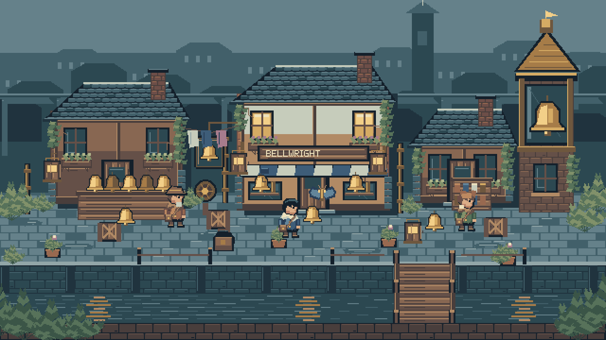
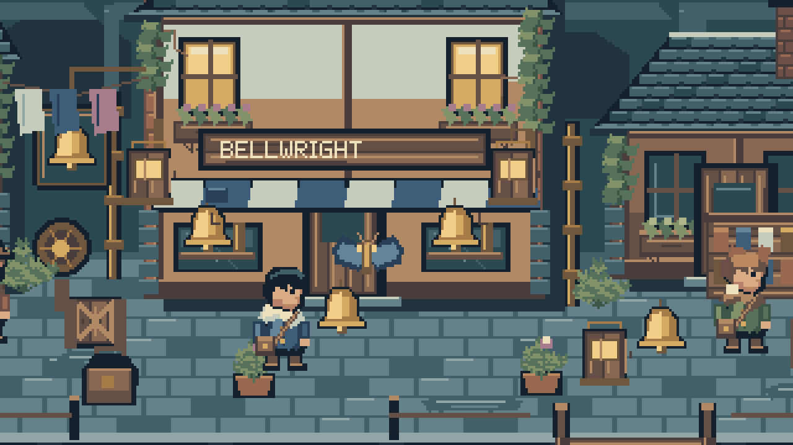
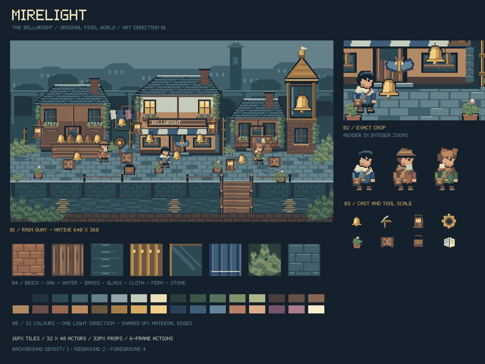
Iona's ivory cape, Orren's low hat and Tamsin's twin tufts remain recognisable as solid silhouettes. Their tools use the same material ramps as the buildings.
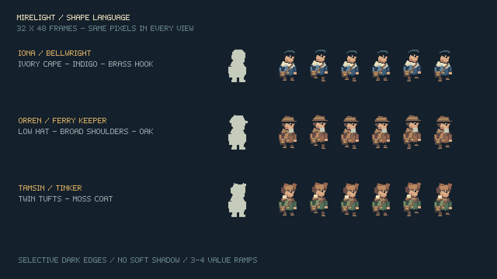
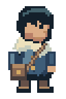
WALK / 6 FRAMES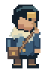
STRIKE / CONTACT ON FRAME 3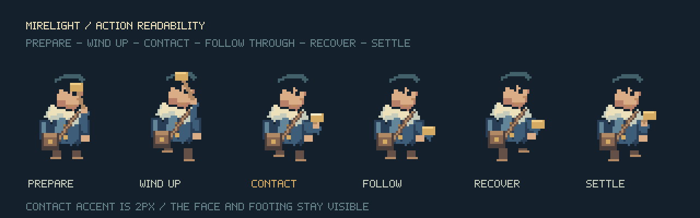
Brick is built in staggered groups. Oak has long connected grain. Brass gets a narrow stepped highlight. Cloth keeps broad folds. Water uses horizontal reflection bands.
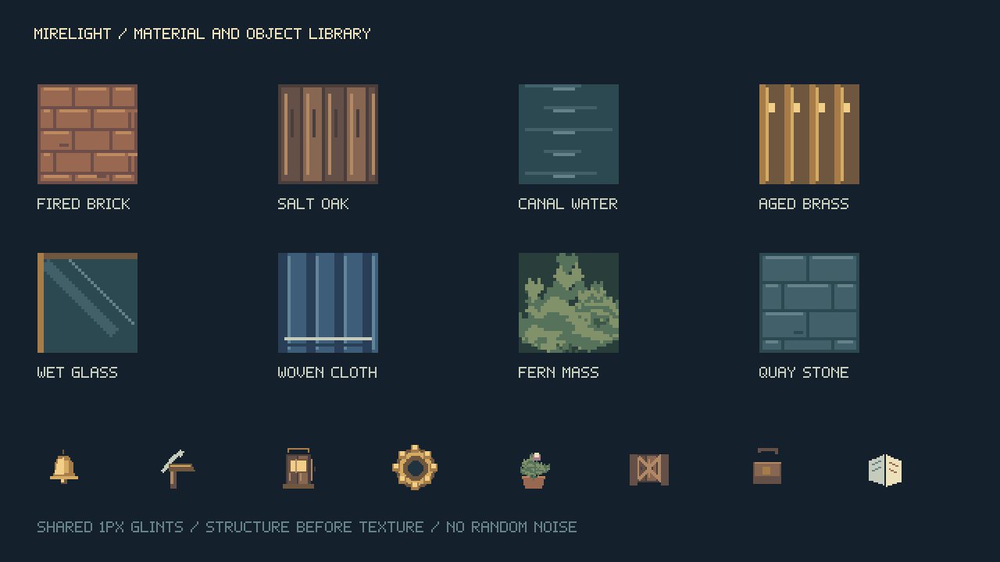
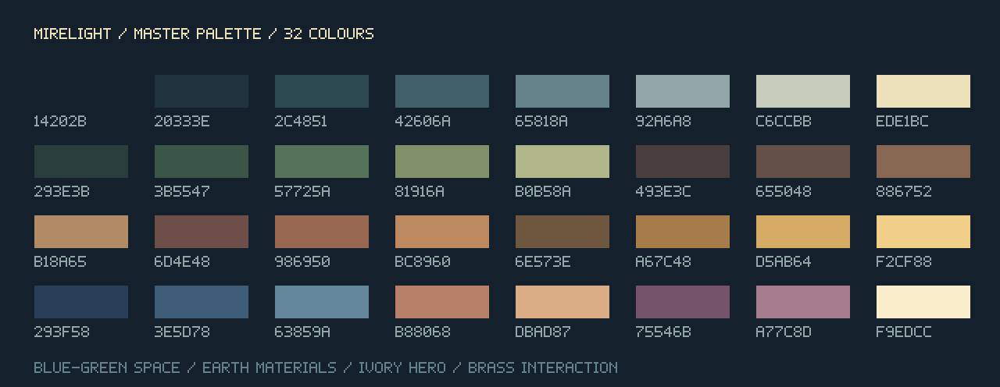
The interface uses the same brass edges, deep blue panels, square pixel lettering and inventory objects. Focus is shown by position and a light edge, not a colour change alone.
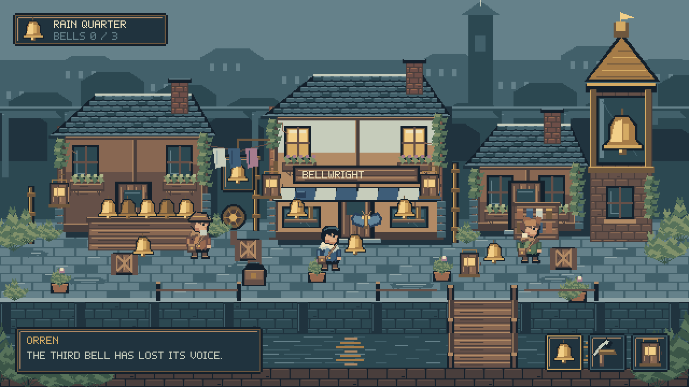
BRASS BELL
A warm highlight marks an object that can answer.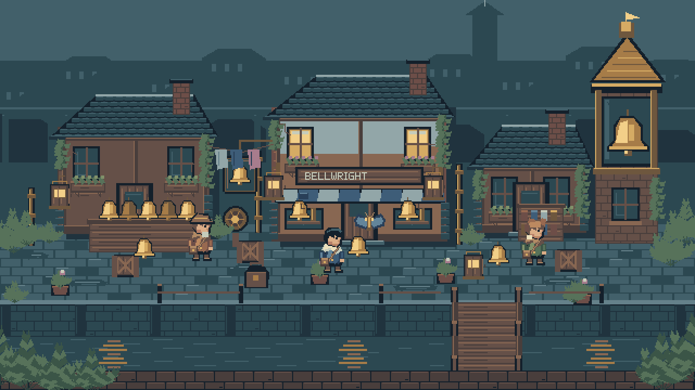
Use these constraints to extend the town into interiors, ferry landings and the flooded bell gardens.
16 px ground units. 32 × 48 character cells. 32 px prop cells. Integer zoom only. Snap sprite positions and camera offsets to the grid.
Connect highlights into deliberate clusters. Preserve the outer silhouette. Texture describes grain, joints or folds; it never fills empty space as noise.
Skyline: two close values. Main facade: three or four. Foreground: dense material edges. The hero keeps a light cape against the cool quay.
Light arrives from the upper left. Ivory is the character anchor. Pale gold is reserved for touchable objects, focused controls and the contact frame.
Six-frame walk and strike. The third strike frame is contact. Trails stay beside the action; the face, hand and feet remain visible.
Remap existing palette colours for dusk. Reuse window, tile and prop modules. A new district adds new silhouettes before it adds new colours.
Art-direction interpretation of Eastward for dense inhabitable streets, and Sea of Stars for readable colour and light hierarchy. Original characters, architecture, interface, lettering and pixels; no commercial assets or code copied.
The imported open-source-game-reference catalog was also searched. Shattered Pixel Dungeon was inspected as a small-sprite reference; its GPL code and assets are not included.
Full production rules ↓ · Asset manifest ↓ · Reproducible asset source ↓